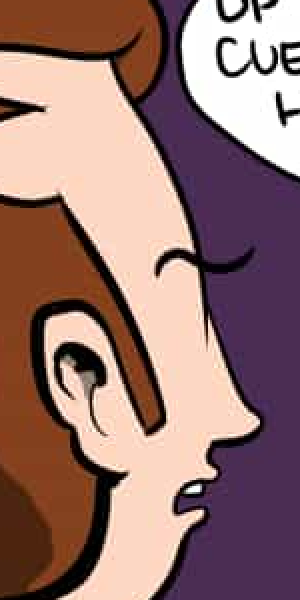
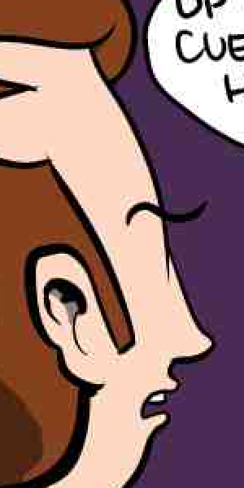

FLIF is a lossless format. Still, if you want to, you can allow the encoder to modify the input image in order to improve compression.
Obviously it will only do that if you tell it to, by using the command-line option --lossy [quality].
One of the advantages of using a lossless format in a lossy way (as opposed to using a lossy format), is that generation loss is not an issue. Of course the information that is lost, stays lost, but no matter how many times you save a FLIF file, it will not get any additional loss from a decode-encode cycle. This is not the case for e.g. JPEG, where each decode-encode cycle always introduces additional loss.
Lossy FLIF has the same advantages as lossless FLIF: it works well on any kind of image (photographs, webcomics, abstract art, whatever), and it is still Responsive by design: you can still progressively decode a lossy FLIF or generate a thumbnail from the first part of the file.
| Original (lossless) 104,585 byte PNG 52,848 byte FLIF |
Lossy FLIF 37,207 bytes |
JPEG (mozjpeg, quality 50) 37,379 bytes |
JPEG (libjpeg, quality 50) 37,923 bytes |
|---|---|---|---|
|  |  |
Here is a case study on one image to give you an idea of the kind of artifacts lossy FLIF causes. In our opinion, at low qualities and for photographs, dedicated lossy formats like WebP, JPEG or BPG still produce better results. However, at very high-quality, we think lossy FLIF is a better option. Lossy WebP has obligatory chroma subsampling and YCbCr color transformation, which limits its usefulness at high qualities. JPEG also suffers from the YCbCr transformation, which effectively reduces 24-bit color to 22-bit (with most of the loss in reds and blues). FLIF, being a lossless format, does not have these limitations.
Lossy FLIF is competitive with specialized lossy formats like JPEG, JPEG XR, JPEG 2000, and WebP in terms of DSSIM (perceptual quality) for a given file size, while it avoids the problem of generation loss and it works well on all kinds of images, also non-photographic ones. Here are some plots to demonstrate this.
The best (lowest) DSSIM value shown here is actually lossless (which would be DSSIM=0, which cannot be shown on a logarithmic plot like this so we changed the value to 0.000001). The full quality range is shown for each format. Note that WebP are actually two formats: a lossy format based on VP8, and a (near-)lossless format.
{kind=link}
{kind=link}
{kind=link}
{kind=link}
{kind=link}
{kind=link}
{kind=link}